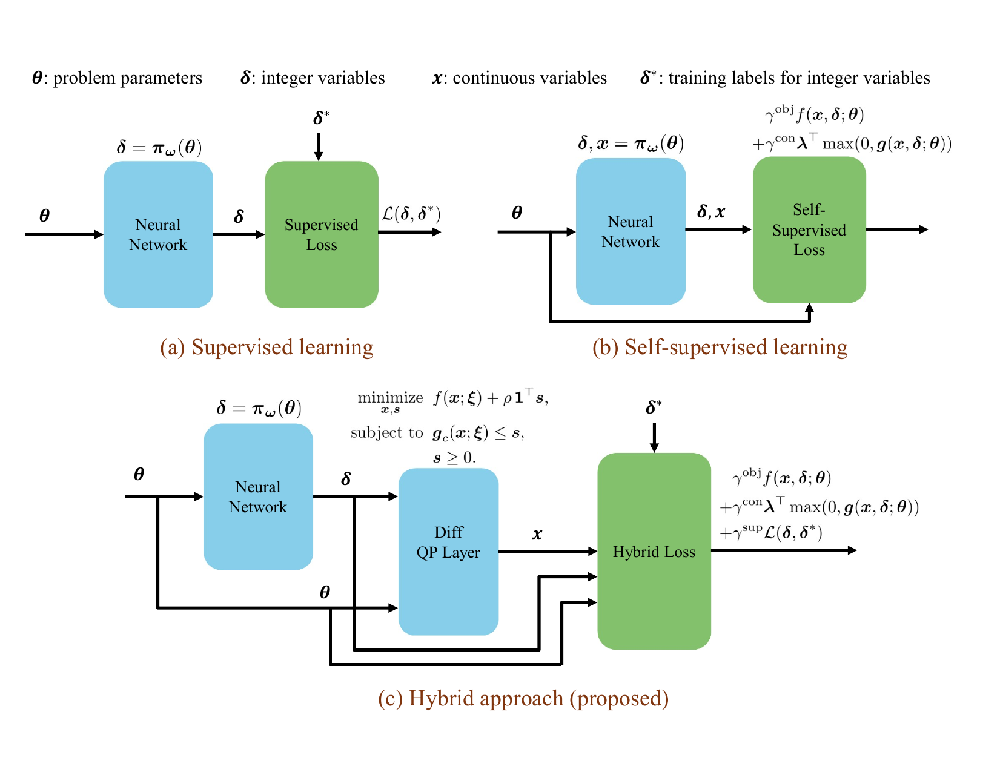
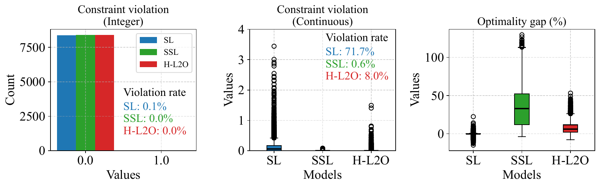
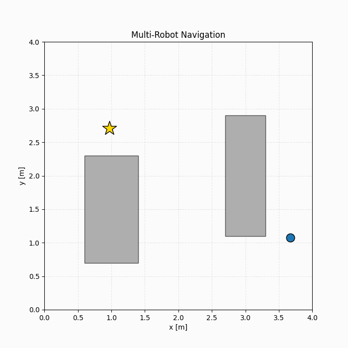
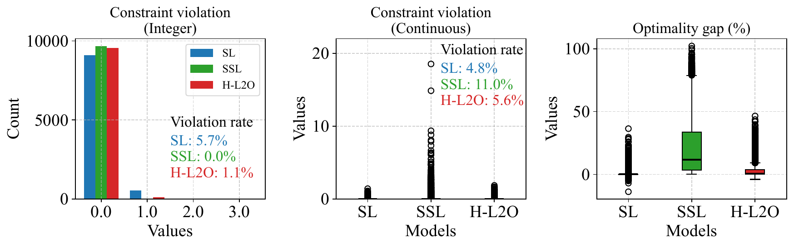
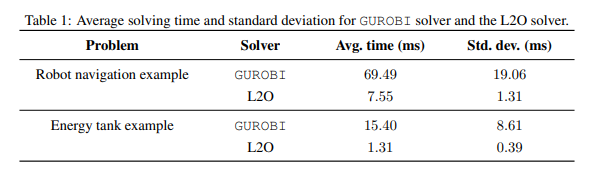

Overview
This work proposes a learning-to-optimize (L2O) framework for accelerating the solution of parametric MIQP problems by learning structured solution components directly from data. The key idea is to predict high-quality integer decisions using a neural network, while preserving exact continuous optimality by solving a differentiable quadratic programming (QP) layer conditioned on the predicted integers. By explicitly separating discrete and continuous variables, the framework leverages problem structure and improves both feasibility and performance.
To train the model, we introduce a hybrid loss function that combines:
- a supervised loss, encouraging predicted integer solutions to match globally optimal ones when labels are available, and
- a self-supervised loss, derived directly from the MIQP objective and constraints, promoting feasibility and consistency even without labeled solutions.
This hybrid learning strategy bridges the gap between purely supervised and purely self-supervised approaches. The effectiveness of the proposed method is demonstrated on benchmark MI-MPC problems, where it achieves significant computational speedups while maintaining strong feasibility and near-optimal control performance.

Results
We evaluate the proposed hybrid L2O framework on two representative MI-MPC benchmarks:
- Robot navigation with collision avoidance, where binary variables encode logical collision-avoidance constraints and interact strongly with continuous states and inputs.
- Thermal energy tank control, where integer variables directly appear in the objective function and govern operational modes.
We compare three approaches:
- Hybrid L2O (H-L2O) — proposed method
- Supervised learning (SL) — trained only using labeled optimal integer solutions
- Self-supervised learning (SSL) — trained using objective- and constraint-based losses only
Performance is evaluated using constraint violation rates and optimality gaps relative to the globally optimal solution.
Discussion: Overall, the results demonstrate that the proposed hybrid learning-to-optimize (L2O) framework achieves a strong balance between feasibility and optimality across both benchmarks. These results highlight that combining supervised and self-supervised objectives is crucial for producing solutions that are both feasible and near-optimal in mixed-integer control problems.
Robot Navigation Results


Thermal Energy Tank Results

Computational Efficiency

Across both benchmarks, the L2O-based approaches are significantly faster than a state-of-the-art MIQP solver. In particular, the proposed framework achieves approximately:
- 9× speedup for the robot navigation problem, and
- 12× speedup for the thermal energy tank problem.
These results demonstrate the suitability of the proposed hybrid L2O framework for real-time mixed-integer MPC applications.
Publications
- A Hybrid Learning-to-Optimize Framework for Mixed-Integer Quadratic Programming
Viet-Anh Le, Mu Xie, Rahul Mangharam
8th Annual Learning for Dynamics \& Control Conference (L4DC), 2026
Published paper (PMLR) · Preprint
Contributors
Viet-Anh Le, Mu Xie, Rahul Mangharam
Code: GitHub Repository
Citation
@inproceedings{le2026hybrid,
title={A Hybrid Learning-to-Optimize Framework for Mixed-Integer Quadratic Programming},
author={Le, Viet-Anh and Xie, Mu and Mangharam, Rahul},
year={2026},
booktitle={8th Annual Learning for Dynamics \& Control Conference},
pages={1055--1069},
volume={331},
series={Proceedings of Machine Learning Research},
publisher={PMLR},
url={https://proceedings.mlr.press/v331/le26a.html},
}